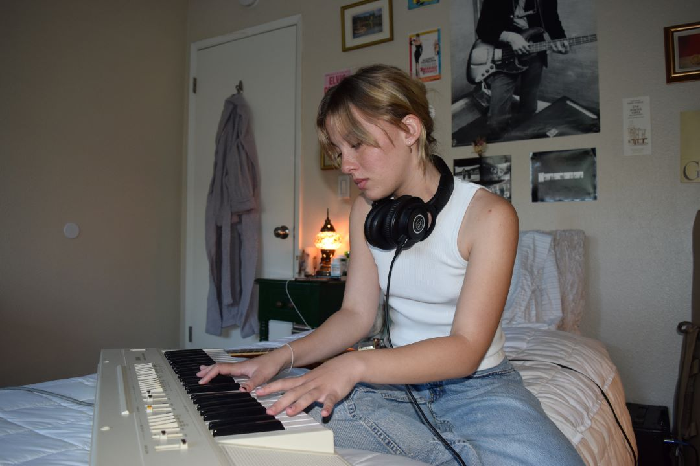

San Luis Obispo (SLO) is known for being a college town with more than half of its residents being college students. A big part of the culture in SLO is the music scene, which comprises a lot of local bands and artists.
Explore the diverse music scene that makes up SLO and the community that is built around it, bringing people together through the power of music.
New Voices: Olivia Nieporte’s Debut Single
The music scene of San Luis Obispo is always evolving, with fresh talent and voices bringing in unique perspective and sounds. Discover the story of Olivia Nieporte, a second-year Cal Poly student, as she releases her debut song "raincoat."

![From a young age, “[music] was just something that made the thoughts in my brain shut off for once and I could be at peace,” Nieporte says.](img/11.jpg)
 />
/>